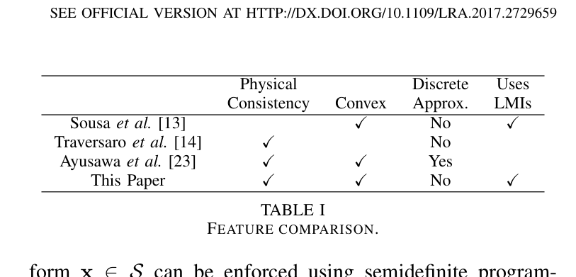
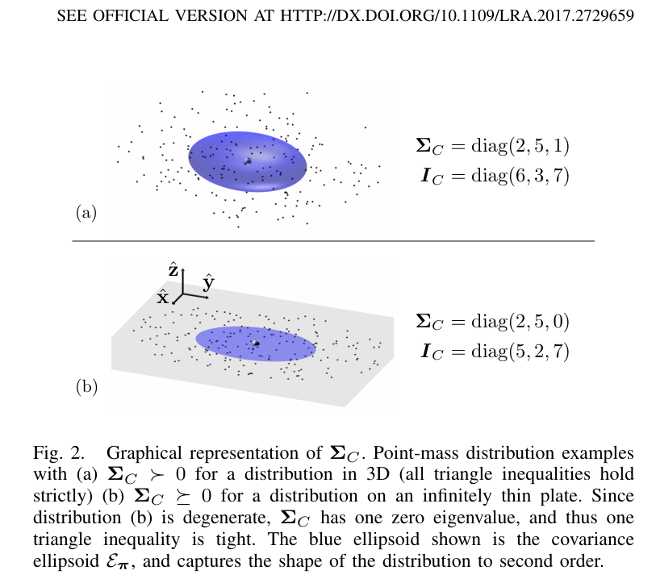
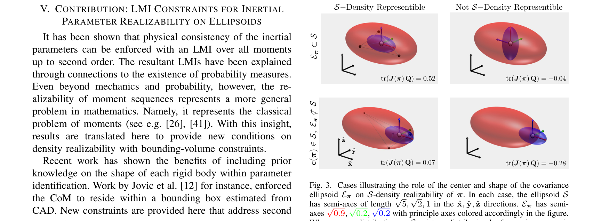
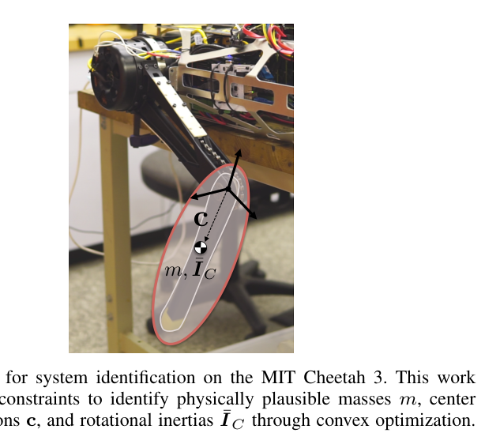
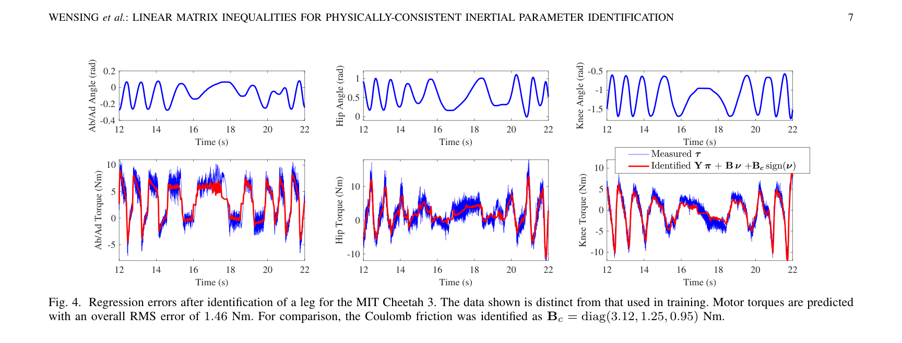
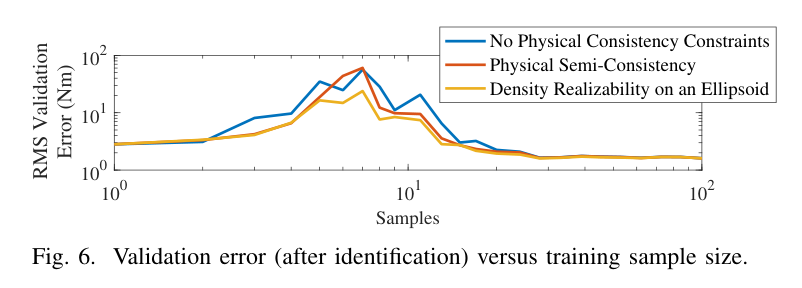

이 논문에서 가져갈 세 가지
양의 관성만으로는 부족하다
질량과 회전관성이 양수여도 관성 주값의 삼각부등식을 어기면 실제 질량 분포로 만들 수 없다.
물리 조건을 넣어도 볼록하다
유사관성 J(π)는 파라미터에 선형이다. 완전 일관성과 타원체 제약을 포함한 식별을 SDP로 정식화할 수 있다.
가능한 해와 식별된 값은 다르다
데이터가 구분하지 못하는 개별 질량·관성은 남는다. 그 방향에서는 형상 제약과 사전값이 해 선택에 관여한다.
이 구분은 디지털 트윈에서 특히 중요하다. 실제 로봇의 측정은 여러 파라미터가 섞인 조합만 알려줄 수 있지만, 시뮬레이터는 링크별 질량·질량중심·관성의 개별값을 요구한다. 이 논문은 그 간극에 물리적으로 가능한 값을 고르는 기준을 제공한다.
최소제곱은 물체의 존재까지 확인하지 않는다
역동역학이 선형이라는 사실은 식별을 쉽게 만든다. 그러나 선형 회귀가 허용하는 모든 숫자 조합이 실제 강체는 아니다.
모델 기반 전신 제어에는 정확한 동역학 모델이 필요하다. 로봇의 운동방정식은 관성 파라미터 π에 대해 다음과 같이 쓸 수 있다. 잡음이나 부족한 자극이 있는 상태에서 잔차만 줄이면, 음의 질량이나 불가능한 관성값이 나올 수 있다.
링크당 10개, 기준점은 좌표 원점
질량중심 c와 질량중심 기준 관성 ĪC를 직접 변수로 쓰면 mc나 mccT 같은 곱이 나타난다. 대신 h와 원점 기준 Ī를 쓰면 파라미터에 대한 선형성을 유지할 수 있다. URDF 값을 가져올 때는 관성의 기준점뿐 아니라 관성 좌표계의 회전과 단위도 맞춰야 한다.
기존 접근에서 무엇을 더했나
| 접근 | 물리 일관성 | 볼록성 | 표현과 절충 |
|---|---|---|---|
| Sousa & Cortesão, 2014 | 반일관성 | 볼록 | 6×6 LMI. 삼각부등식을 포함하지 않는다. |
| Traversaro 외, 2016 | 완전 | 비볼록 | 회전·주관성·질량중심·질량의 다양체 매개변수화. |
| Ayusawa 외, 2011 | 완전 | 볼록 | 점질량 격자의 비음 가중치. 이산 근사와 변수 증가가 따른다. |
| Wensing 외, 2018 | 완전 | 볼록 | 4×4 LMI. 점질량 격자 근사가 필요 없다. |

유사관성 또는 모멘트 행렬 자체는 오래된 로봇 문헌에도 등장한다. 이 연구의 기여는 그 표현을 완전 물리 일관성, 질량 분포의 공분산, 경계 타원체 안의 실현 가능성과 연결해 식별 문제에 사용할 수 있게 만든 데 있다.
관성을 질량 분포의 모멘트로 다시 읽기
질량 밀도 ρ(x)가 음수가 아니라면, 질량·1차 모멘트·회전관성은 같은 분포를 서로 다른 방식으로 적분한 값이다.
양의 운동에너지와 실제 질량 분포 사이
질량 m이 양수이고 ĪC가 양의 정부호이면 6×6 공간 관성 I(π)도 양의 정부호다. 이 반일관성 조건은 운동에너지가 양수임을 보장한다. 하지만 관성의 주값에는 하나의 조건이 더 필요하다.
주축 방향의 2차 모멘트를 μ1, μ2, μ3라 하면 J1 = μ2 + μ3이다. 다른 두 주관성도 같은 방식으로 정해진다. 따라서 J1 + J2 − J3 = 2μ3 ≥ 0이다. 삼각부등식은 각 방향의 2차 모멘트가 음수가 될 수 없다는 사실을 표현한다.
| 분포 또는 가정 | 주관성 | 해석 |
|---|---|---|
| μ = (2, 5, 1) | (6, 3, 7) | 삼각부등식이 모두 엄격하게 성립한다. |
| 이상적인 x축 막대 | (0, μ1, μ1) | 막대 축 둘레 관성이 0인 퇴화 경계 사례다. |
| 주관성 (1, 1, 3) | 1 + 1 < 3 | μ3 = −0.5가 필요하므로 비음 질량 분포로 만들 수 없다. |
삼각부등식은 공분산의 양반정부호 조건이다
xc = x − c라 두고 질량중심 기준 2차 모멘트 ΣC를 정의하면, 관성과 공분산의 관계가 드러난다.
두 번째 식의 양변에 trace를 취하면 Tr(ĪC) = 2Tr(ΣC)이고, 이를 다시 대입하면 세 번째 식을 얻는다. 관성과 공분산은 같은 고유벡터를 가지며, 고유값 사이에는 Ji = Tr(ΣC) − μi의 관계가 있다.

Schur 보수로 4×4 LMI를 얻는다
“운동에너지가 양수인가”에서
연구의 핵심을 풀어 쓴 해설 문장 · 원문 직접 인용 아님
“이 관성을 만들 질량 분포가 있는가”로.
6×6 공간 관성 I(π) ≻ 0은 반일관성을, 4×4 유사관성 J(π) ≻ 0은 비퇴화 분포의 완전 일관성을 표현한다. 더 작은 행렬로 더 강한 물리 조건을 기술하는 셈이다.
질량중심만 안에 있다고 충분할까?
실제 링크의 크기를 안다면, 그 안에서 질량 분포가 만들어질 수 있는지도 물을 수 있다.
CAD 형상을 감싸는 타원체를 S라 하자. 중심 xs와 양의 정부호 형상 행렬 Qs를 사용하면 경계를 다음과 같이 쓴다.
그러나 질량중심이 타원체 안에 있어도, 2차 모멘트가 지나치게 크면 그 관성을 만들 질량은 경계 밖에 놓여야 한다. 중심이 경계에 가까워질수록 허용되는 분산도 줄어든다.
Tr(JQ)는 타원체를 정의하는 이차식의 질량 가중 적분이다. 지지집합이 S 안에 있다면 이 값은 음수가 될 수 없다. 논문은 모멘트 문제의 결과를 이용해, 해당 조건 아래에서 같은 관성 모멘트를 갖는 내부 질량 분포가 존재함을 보인다. 그 모멘트는 점질량 네 개로도 표현할 수 있다. 실제 링크를 네 점으로 근사해 식별한다는 뜻은 아니다.

굽은 붐처럼 단일 타원체가 형상을 느슨하게 감싸는 경우에는 여러 타원체의 합집합을 사용할 수 있다. 각 조각의 파라미터 πj가 자기 타원체 안에서 실현 가능하고, 그 합이 전체 π가 되도록 구성한다(Corollary 2). 하나의 큰 타원체로 감싸는 것보다 형상 정보를 더 구체적으로 반영하는 방법이다.
동역학을 설명하는 데이터 항
해의 위치와 물리적 범위
토크 잔차 + 사전값 정규화
Ji ≻ 0 · Ci ⪰ 0 · Tr(JiQi) ≥ 0
Cheetah 3 다리에서 확인한 것
실험 대상은 MIT Cheetah 3의 다리 하나다. 세 관절에 링크 세 개와 로터 세 개를 포함해 총 여섯 강체를 모델링했다. 기어비가 10.6:1인 구동계에서는 로터 관성도 토크에 기여하므로, 링크 관성과 함께 식별했다.

관성과 마찰을 함께 추정한다
| 추정 변수 | 관성 60개(6강체 × 10), 점성 마찰 3개, 쿨롱 마찰 3개. |
|---|---|
| 입력 궤적 | 발끝을 가상 타원체 껍질 위에서 임피던스 제어. 구면각 속도에 정현파를 사용했다. |
| 궤적 수치 | φ̇ = Aφsin(ωφt), θ̇ = Aθsin(ωθt). Aφ = 12, Aθ = 3.4 rad/s; ωφ = 1.63, ωθ = 0.265 rad/s. |
| 토크 경로 | 모터 드라이버의 명령 토크에 기반한 추정. 독립 토크 센서 실측이 아니다. |
| 회귀·전처리 | 수정 RNEA로 회귀행렬의 열을 계산. 검증에서는 비인과 필터를 이용해 오프라인 미분한 가속도를 사용했다. |
| 데이터 분할 | 같은 실험의 앞 10,000표본으로 학습하고 다음 10,000표본으로 검증했다. |
| 솔버 | MATLAB / MOSEK. 논문 보고 시간 1.67초이며 본 해설에서는 재현하지 않았다. |
| 관절별 검증 RMS | 1.48 / 1.16 / 1.16 N·m — ab/ad, hip, knee 순서. |
| 쿨롱 마찰 | Bc = diag(3.12, 1.25, 0.95) N·m. 논문은 모든 제약의 만족을 확인했다고 보고한다. |

표본이 적을 때 물리 제약의 가치가 드러난다

데이터가 적을 때 최소제곱 해는 잡음 방향으로 크게 움직일 수 있다. 물리 제약은 그중 불가능한 방향을 잘라내고, 타원체는 형상 정보를 이용해 허용 영역을 더 좁힌다. 이 결과는 이 실험에서의 일반화 개선 근거이며, 모든 로봇에서 같은 개선 폭을 보장하는 것은 아니다.
Fig. 5는 원 노트에서 이미지 오추출로 분류되어 싣지 않았다. 해당 논의는 링크 관성·로터 관성·마찰이 모두 토크에 기여하므로 함께 모델링해야 한다는 내용이다. 각 기여 비율은 기체와 변속기에 의존한다.
물리 일관성은 식별 가능성을 만들지 않는다
토크를 똑같이 설명하는 파라미터가 여럿이라면, 물리 제약을 넣은 뒤에도 여러 해가 남을 수 있다.
회귀행렬 Y의 열이 선형종속이면 데이터는 일부 파라미터 조합만 구분한다. Yδπ = 0인 변화는 예측 토크를 바꾸지 않는다. 기저 파라미터는 데이터가 구분하는 독립 조합이고, 물리 일관성은 전체 파라미터가 놓일 수 있는 영역이다.
데이터가 정하는 것
운동과 토크에 나타나는 파라미터 조합. 자극, 기구학, 센서, 모델 구조에 따라 관측 가능한 방향이 달라진다.
제약·사전값이 고르는 것
같은 토크를 만드는 후보 중 물리적으로 가능한 배치. 비식별 방향에서는 CAD 정규화와 형상 가정의 영향이 남는다.
따라서 “전역 최적해를 구했다”는 말은 주어진 목적함수와 제약에 대한 설명이다. 실제 링크의 개별 질량과 관성을 유일하게 알아냈다는 뜻이 아니다. 작은 정규화 가중치라도 데이터가 전혀 보지 못하는 방향에서는 해 선택을 결정할 수 있다.
논문 결과와 해설의 판단을 나누어 읽기
| 근거의 범위 | 남는 질문 | 후속 검증 |
|---|---|---|
| 논문: 명령 토크 사용 | 구동기 모델 오차가 잔차에 포함될 수 있다. | 실측 토크·힘 또는 구동기 모델을 포함한 검증. |
| 논문: 정지 부근 마찰 오차 | 쿨롱 부호 모델로 정지·스틱션을 충분히 설명하는가? | 정지 구간 처리 규칙과 대안 마찰 모델 비교. |
| 논문: 통계적 해석 | 질량 분포의 공분산과 추정치의 불확실성은 다르다. | 측정 불확실성·베이지안·집합 기반 추론과 결합. |
| 논문: 3 DoF 검증 | 고자유도·부동 기저에서도 효과가 유지되는가? | 계산량과 예측 성능을 새 시스템에서 확인. |
| 해설: 시간순 분할 | 다른 하중·궤적·운전 조건에 일반화하는가? | 별도 운전 조건의 보류 실험. |
| 해설: 개별값의 사전 의존 | 어떤 파라미터가 데이터로 결정되는가? | 기저 랭크, 영공간, 사전값 감도 보고. |
관절별 잔차가 쿨롱 마찰 크기와 비슷하다는 사실과 정지 구간의 오차는 마찰 모델의 한계를 의심할 근거다. 다만 이것만으로 전체 잔차의 주된 원인이 마찰이라고 정량적으로 확정할 수는 없다. 원자료에 의한 잔차 분해가 필요하다.
디지털 트윈에는 먼저 검사를, 그다음 식별을
HR35 적용 맥락에서 문제는 명확하다. 실차의 동역학 식별은 묶음 파라미터를 제공할 수 있지만, AGX 트윈은 붐·암·버킷의 개별 질량·질량중심·관성을 요구한다. 유사관성 LMI는 현재 값을 검사하고, 나중에는 측정 묶음과 일치하는 물리적 배치를 고르는 도구가 된다.
| 요소 | 현재 기록 | 적용 판단 |
|---|---|---|
| 관성 표현 | URDF의 m, c, ĪC. 기준점 관련 오류 기록이 있다. | 오프라인 검사 가능 좌표 변환 후 J를 구성한다. |
| 경계 형상 | bucket_spec 등 링크 메시를 사용할 수 있다. | 버전 확인 필요 실차와 같은 형상을 사용한다. |
| 사전 질량 | 아주대 자료의 182 / 122 / 92 kg와 기하 추정 관성. | 개체 동일성 미확인 |
| 토크 경로 | 압력 → 기구 변환 → 관절 토크 경로가 필요하다. | 회귀 단계의 선행 조건 압력 보정·유효 면적·변환을 확정한다. |
| 운동 측정 | 20 Hz 경사계 절대각. | 가속도 품질 검증 필요 상대각 변환, 대역폭, 미분 잡음을 평가한다. |
| 마찰 | 실린더 공간의 점성·쿨롱 구조. | 관절 공간으로 변환하고 하중 비례 가설과 비교한다. |
| 자극 | 개루프 램프 운전 기록. | 논문의 정현파 임피던스 실험과 별도로 자극성을 평가한다. |
표본율 20 Hz라는 사실만으로 관성 식별의 가능·불가능을 단정할 수는 없다. 실제 운동 대역과 가속도 신호 대 잡음비가 중요하다. 다만 1 kHz 엔코더 기반 실험과 같은 품질을 가정할 근거도 없다.
실행 순서: 현재 값 → 랭크 → 형상 → 선택기 → 감도
-
현재 트윈 관성의 물리 일관성 검사
붐·암·버킷의 질량, 질량중심, 관성을 같은 링크 좌표계로 변환한다. J의 고유값, 질량, 주관성 삼각부등식 잔차를 기록한다.
완료 기준: 단위와 스케일을 명시한 수치 허용 오차 아래에서 각 링크의 상태를 판정한다. 음의 고유값이 유의하면 기준점·축·단위·관성 입력을 추적한다. 값을 임의로 키워 통과시키지 않는다.
-
평면 3R 모델의 기저 파라미터 랭크 확인
평면 붐·암·버킷의 회귀행렬에 충분히 다양한 합성 운동을 넣고 QR 또는 SVD로 랭크와 영공간을 확인한다. 선회축은 별도 범위로 둔다.
완료 기준: 랭크의 수치 임계값과 운동 조건을 함께 보고한다. 원 노트의 “9개”는 검증할 가설이다. 모델 구조와 중력 방향을 확인하기 전에 30 − 9 = 21개의 비식별 방향을 확정하지 않는다.
-
현재 메시로 경계 타원체 구성
각 링크의 외접 타원체를 계산하고 C(π) ⪰ 0과 Tr(JQ) ≥ 0을 검사한다. 단일 타원체가 너무 느슨하면 조각별 합집합을 검토한다.
완료 기준: 메시 포함 여부, 좌표계, 제약 잔차를 보관한다. 2026-09-22 확정으로 기록된 bucket_spec 버전을 확인하고, 옛 AK 830/840 메시를 혼용하지 않는다.
-
묶음 측정에 맞는 개별값 선택기 작성
Aπ = b로 묶음 파라미터를 고정하고, 링크별 J와 타원체 제약 아래에서 사전값과 가까운 해를 고른다. 실제 묶음값이 없으면 합성 데이터로 정식화와 제약을 먼저 검증한다.
완료 기준: 솔버 상태와 스케일을 고려한 등식·행렬 제약 잔차를 확인한다. 원 노트의 1% 잔차는 업무 수용 기준으로 둘 수 있지만, 정확한 등식 정식화의 수치 오차 기준은 따로 정한다.
-
사전값 감도와 비식별 방향 보고
아주대 자료, 기하 추정, 총중량 배분 등 사전값을 바꾸어 개별 질량·관성의 변화를 비교한다. 정규화 가중 행렬과 형상 가정의 영향도 분리한다.
완료 기준: 민감한 항목을 파라미터 지도의
identifiability열에 “사전값 의존”으로 표시한다. 5% 같은 실무 임계값에는 비교 기준과 단위를 붙이고, 여러 해의 평균을 정답으로 취급하지 않는다.
구현 전에 확인할 수식과 함정
1. 공간 관성과 유사관성을 구분하기
평면 운동에서 일부 3차원 파라미터가 토크에 나타나지 않더라도, 3차원 트윈의 물리 일관성 검사는 전체 J에 대해 수행해야 한다. 예를 들어 회전축을 y로 두면 평면 밖 1차 모멘트와 일부 곱관성이 데이터에 나타나지 않을 수 있다.
2. 타원체의 Q를 일관된 부호로 만들기
3. 厳密な不等式は数値マージンに置き換える
通常のSDP実装では開集合の条件 J ≻ 0を直接扱わず、正のマージンを持つ閉じた制約を使う。ただしJには質量、1次モーメント、2次モーメントという異なる単位が混在するため、生の行列に一律の閾値を当てるだけでは単位やリンク寸法の影響を受ける。
4. 選択器の擬似コード
以下は式の構造を示すCVXPY風の擬似コードであり、実行検証済みの実装ではない。入力は共通座標系・単位へ変換済みとし、マージンと事前値距離をスケーリングしている。
import cvxpy as cp
import numpy as np
# pi = [m, hx, hy, hz, Ixx, Ixy, Ixz, Iyy, Iyz, Izz]
# I はリンク座標原点基準
def pseudo_inertia(pi):
m = pi[0]
h = cp.reshape(pi[1:4], (3, 1), order="C")
I = cp.bmat([
[pi[4], pi[5], pi[6]],
[pi[5], pi[7], pi[8]],
[pi[6], pi[8], pi[9]],
])
Sigma = 0.5 * cp.trace(I) * np.eye(3) - I
return cp.bmat([
[Sigma, h],
[h.T, cp.reshape(m, (1, 1), order="C")],
])
def choose_consistent(priors, A, b, ellipsoids,
lengths, masses, weights, eps):
pis = [cp.Variable(10) for _ in priors]
constraints = []
penalties = []
for pi, prior, Q, ell, m_ref, W in zip(
pis, priors, ellipsoids, lengths, masses, weights
):
J = pseudo_inertia(pi)
D = np.diag([1 / ell, 1 / ell, 1 / ell, 1])
J_scaled = D @ J @ D.T / m_ref
constraints += [
J_scaled >> eps * np.eye(4),
cp.trace(J @ Q) >= 0,
]
penalties.append(cp.sum_squares(W @ (pi - prior)))
stacked = cp.hstack(pis)
constraints += [A @ stacked == b]
problem = cp.Problem(
cp.Minimize(sum(penalties)),
constraints,
)
problem.solve(solver="SCS") # MOSEK 等も選択肢
# 戻り値は「識別済み質量」ではなく、条件に整合する候補
# status に加え、等式残差・最小固有値・trace 残差を別途確認
return problem.status, [pi.value for pi in pis]測定された束パラメータに誤差がある場合、正確な等式Aπ = bと物理制約が矛盾することもある。実行不能なら座標・束の定義・測定誤差を調べる。残差ペナルティや許容区間を導入する場合は、その変更が測定の信頼度をどう表すかを明示する。
5. 系統識別の抽出表
| 問題・運転範囲 | 剛体慣性パラメータの制約付き識別。3 DoFの空中運動、接触なし。 |
|---|---|
| 入力・状態・出力 | 関節トルク指令とq、νを記録し、逆動力学のトルク残差を最小化。 |
| 推定対象と固定値 | 慣性60 + 摩擦6。機構寸法・軸・ギア比・CAD楕円体を固定。 |
| 座標と単位 | 慣性はリンク座標原点基準。トルクはN·m。楕円体も同じリンク座標系。 |
| 測定・同期 | 1 kHz、トルクは指令値。同期精度の具体的記述はノートにない。 |
| 励起と除外規則 | 二つの周波数による正弦波運動。最適励起設計ではなく、停止区間の除外規則も記録されていない。 |
| 閉ループ・雑音 | インピーダンス制御下での直接回帰。非因果フィルターは使用するが、閉ループ偏りや操作変数法の検討は記録されていない。 |
| 検証・不確かさ | 同一実験の時系列分割。トルクRMSで比較し、個別パラメータの信頼区間は示されていない。 |
| 公開物 | ノートでは本文中のコード・データ公開リンクを確認できていない。補足数値への言及はあるが、現時点の公開状況は未確認。 |
6. 主張・検算・推論を分ける
| 項目 | 追跡できる根拠 | 残る限界 |
|---|---|---|
| 式 (17) | 式 (16)のtraceを取り、元の式へ代入。 | 測定値を用いた再現ではなく代数的確認。 |
| Theorem 3 | Schur補数からm > 0、ΣC ≻ 0を得る。 | 退化境界は半正定値条件として区別する。 |
| 主慣性の例 | μ = (2, 5, 1)から(6, 3, 7)を計算。 | 図の原データを再構成したものではない。 |
| RMS | 本文の3値から約1.28 N·mを算出。 | キャプション1.46 N·mとの違いは未解決。 |
| 標本数の効果 | Fig. 6の比較と論文の解釈。 | 原データがなく再現できていない。軸単位の確認も残る。 |
| 計算時間 | 論文報告1.67秒。 | HR35の処理時間を保証する根拠にはしない。 |
出典と読解の範囲
本稿は提供されたObsidian論文ノートを再構成した研究解説であり、実験の再現報告ではない。重複する深掘りQ1–Q12は、理論・実験・HR35適用・実装ノートに統合した。
-
主論文
Patrick M. Wensing, Sangbae Kim, Jean-Jacques E. Slotine. Linear Matrix Inequalities for Physically-Consistent Inertial Parameter Identification: A Statistical Perspective on the Mass Distribution. IEEE Robotics and Automation Letters, 3(1), 2018. DOI: 10.1109/LRA.2017.2729659 所属：University of Notre Dame / MIT。書誌情報は提供ノートに基づく。ノートには2026-09-25のCrossref確認記録があるが、本稿作成時の再照会は行っていない。 -
式・図番号の基準
arXiv:1701.04395v3、2017-09-18、8ページ。 ノートの読解版。著者公開版には公式版参照の記載がある。図1・2・3・4・6とTable Iをローカル抽出画像から掲載し、誤抽出の図5は除外した。画像の出典はすべて主論文。 -
先行研究の位置づけ
Sousa & Cortesão（2014）、Traversaroほか（2016）、Ayusawaほか（2011）は物理一貫性の表現を比較する文脈。Gautier & Khalil（1990/1991）は基底パラメータ、Swevers（1997）は最適励起の文脈で参照される。 原ノートではSousa & Cortesãoの本文は未確保、Sweversは確保済みと記録。すべての先行原典を本稿で独立検証したわけではない。 -
後続研究の読書候補
Lee, Wensing, Park（2020, TRO）の幾何学的識別、TIE 2023の油圧マニピュレータ識別、BIRDy 2021のサーベイ。 前二者は原ノートで未確保。ここでの結果を補強する検証済み根拠としては用いていない。 -
HR35のプロジェクト記録
Werner 2025の要約、Bakの要約、URDF整合性分析、バケットメッシュの版管理記録。 この部分は提供ノート内の内部文脈であり、読者がたどれる公開原典は提示されていない。物理制約の適用案と、実機で検証済みの結論を区別する。
最初の成果は、今あるモデルを説明できること
この研究の力は、推定値に「実際の物体として存在できるか」という問いを加えながら、最適化の扱いやすさを保つ点にある。Cheetah 3の結果はその有効性を示す一方、データが見ていない個別値まで決めてくれるわけではない。
HR35で次に行うべきことは、新しい測定を待たずに既存の慣性値を同じ座標系にそろえ、Jと三角不等式を検査することだ。その後、回帰のランクと事前値感度を調べれば、モデルのどの部分を測定が支え、どの部分を仮定が支えているかが見えてくる。
「物理一貫性を持つ一つの解」
束パラメータ、形状、事前値から選んだ個別慣性には、このラベルが適切だ。測定経路、励起、検証が整い、さらにその個別値の識別可能性が示されて初めて、「識別された値」と呼ぶ根拠が揃う。
実在可能であることは、真の値だとわかったこととは異なる。 この区別を残すことが、信頼できるデジタルツインにつながる。